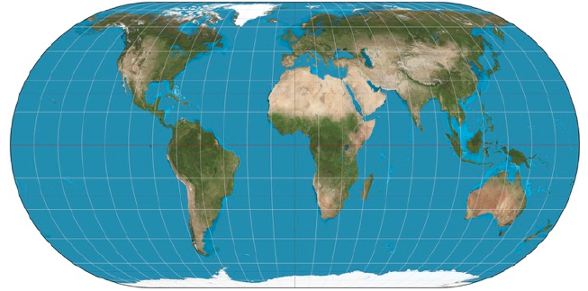

Comprendre les coordonnées géographiques et manipuler des cartes numériques
Introduction
La cartographie est essentielle pour beaucoup d’activités : agriculture, urbanisme, transports, loisirs, etc. Elle a été révolutionnée par l’arrivée des cartes numériques accessibles depuis les ordinateurs, tablettes et téléphones, bien plus souples à l’usage que les cartes papier.
En outre, certains projets collaboratifs comme OpenStreetMap permettent à tous les utilisateurs d’ajouter des informations à une carte numérique en libre accès, qui deviennent alors visibles par tous les utilisateurs
Nous verrons dans ce document, comment se repère t-on sur la Terre ? Comment trouver les coordonnées d’un lieu ? Comment utiliser une carte numérique ?
Rappels
Se repérer sur Terre
Les coordonnées géographiques (ou repères géographiques) sont un système de trois éléments :
- la longitude ;
- la latitude ;
- l’altitude ou élévation par rapport au niveau de la mer.
Les coordonnées géographiques d’un point M sont donc formées par un triplet (λ,φ, h) où :
- λ (lambda) est la longitude, qui est l’angle par rapport au méridien d’origine ;
- φ (phi) est la latitude, qui est l’angle par rapport à l’équateur ;
- h est l’altitude (ou l’élévation) par rapport au niveau de la mer.

Pour se repérer à la surface de la Terre, on peut se contenter de donner les deux premières coordonnées (longitude, latitude).
La longitude varie de 0° à 180° Est et de 0° à 180° Ouest tandis que La latitude varie de 0° à 90 ° Nord et de 0° à 90° Sud.
Sur l’exemple ci-dessous, le point rouge a pour coor- données 60° Est ; 50° Nord
De la sphère à la carte plane
Pour passer d’une sphère à une carte plane, les cartographes utilisent une projection cartographique, c’est à dire un ensemble de techniques géodésiques permettant de représenter une surface non plane (surface de la Terre, d’un autre corps céleste, du ciel, ...) dans son ensemble ou en partie sur la surface plane d’une carte. Il existe différents types de projections. Mais quelque soit la projection utilisée, les déformations des distances, des formes et des angles sont inévitables.
Voir : https://fr.wikipedia.org/wiki/Liste_de_projections_cartographiques
L’informatique a apporté des outils de calcul puissants pour traiter les problèmes de projection et le passage d’une représentation à une autre.
Les angles Longitude et Latitude sont alors mis en relation avec des coordonnées sur ces cartes planes.
Exemple avec la figure ci-dessous :
Carte du monde montrant la latitude et la longitude, suivant une projection de type Eckert IV. La latitude est marquée suivant l’axe vertical, mais la longitude n’est pas mesurable directement par une mesure horizontale, car cette distance est réduite aux pôles, pour mieux correspondre aux distances terrestres réelles, sans pouvoir toutefois donner des distances exactes.
Les sites d’informations géographiques
Géoportail est un portail web public d’informations géographiques. Il a été conçu par l’IGN et inauguré en juin 2006, soit deux mois après le lancement de la version française de Google Maps. Souvent opposés en terme de concurrence, les deux outils ont des objectifs et des modèles différents.
Géoportail couvre exclusivement le territoire français quand Google Maps offre une représentation com- plète du globe. Autre différence notable, la qualité des informations fournies par Géoportail (en ce qui concerne les données images surtout) est égale quel que soit le lieu ciblé quand Google Maps concentre ses efforts sur les espaces qui représentent pour la société de Mountain View un réel intérêt. Car si le premier est un service public, l’autre reste une entreprise commerciale qui doit faire des profits.
Un résumé hâtif permet de penser que le territoire rural français est plus richement représenté par Géo- portail, notamment par le biais des différentes couches -cadastrales, historiques, etc.- que les zones urbaines, plus détaillées sur Google Maps car plus porteuses d’informations monétisables.
A ces deux acteurs s’ajoute OpenStreetMap, projet cartographique collaboratif mondial lancé en 2004, soit au même moment que la version US de Google Maps. Exemple parfait de la culture du “libre”, à l’instar d’un Wikipédia (2001), OSM permet à chacun de renseigner des informations sur des cartes satellitaires à l’aide d’outils disponibles sur l’interface en ligne.
Découverte et utilisation de Géoportail
Recherche de coordonnées géographiques d’un lieu
Sur le site https://www.geoportail.gouv.fr, trouver les coordonnées géographiques de la Tour Eiffel, de votre lycée, de chez vous. Vous répondrezà cette question dans un fichier texte.
Remarque : une fois que vous avez trouver le lieu qui vous intéresse, pour déterminer ses coordonnées, il faut faire soit un clic droit à partir du lieu puis adresse/coordonnée du lieu soit aller la fenêtre à droite outils puis dans Outils principaux et enfin Afficher les coordonnées
Utilisation d’outils informatiques
- A l’aide de l’outil mesure de distance, mesurer, sur la photo, les dimensions du gymnase de notre lycée.
- A l’aide de l’outil de mesure de surface, chercher une estimation de la surface totale du gymnase de notre lycée.
- A l’aide de l’outil de l’outil Calculer un itinéraire, calculer le temps mis par un piéton et la distance entre notre lycée et la mairie de Chaumont.
Utilisation de différents fonds de carte
- En restant sur une vue globale de Chaumont, utiliser différents fonds de carte (en haut à gauche, cliquer sur Carte) pour afficher des renseignements différents et issus de différentes époques de cette zone géographique. En comparant les photos aériennes et les cartes de 1950 à celles d”aujourd’hui, que remarquez-vous sur l’évolution urbaine de Chaumont ?